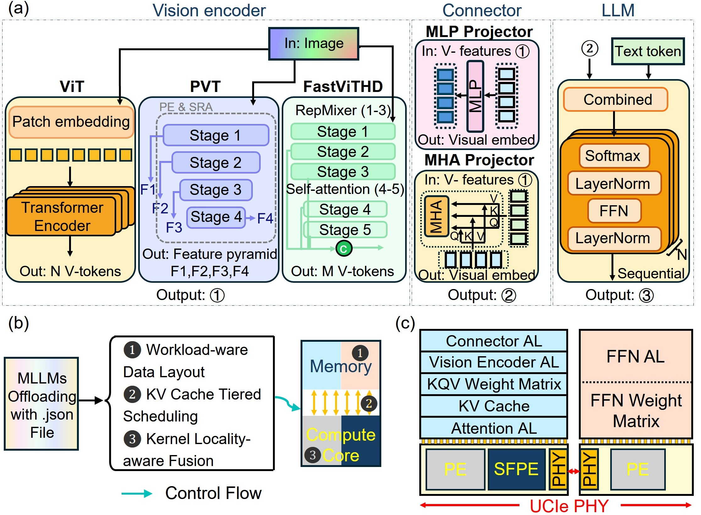
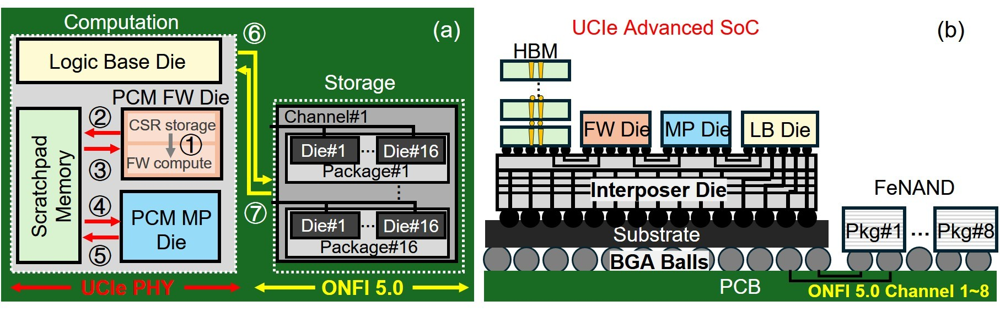
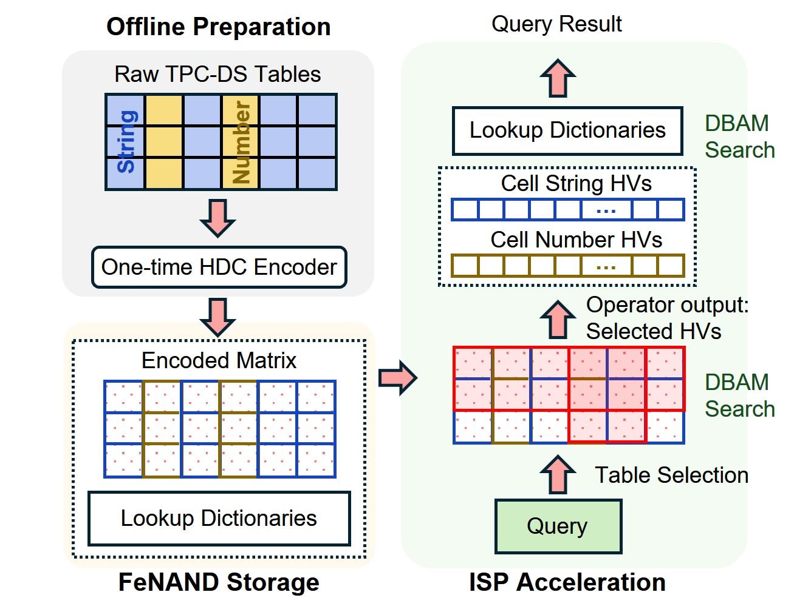
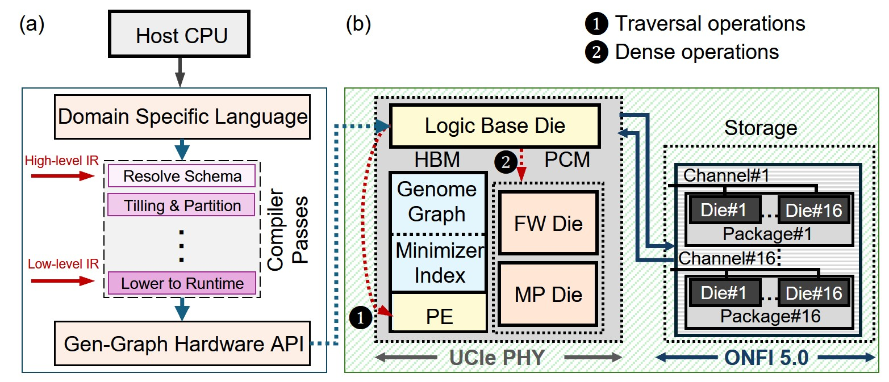
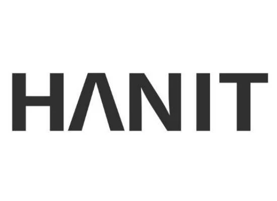
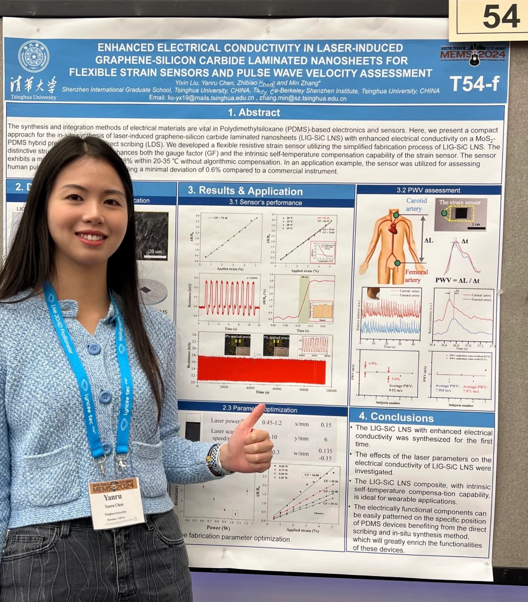
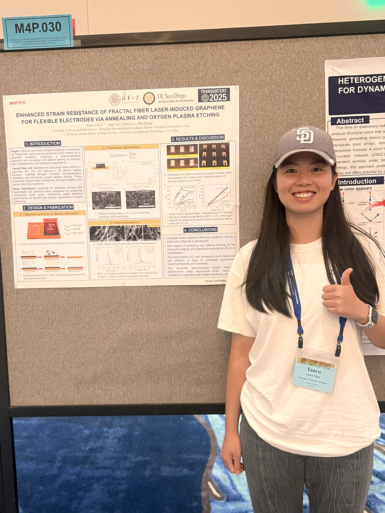
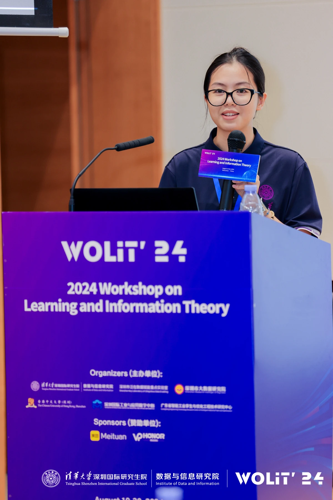
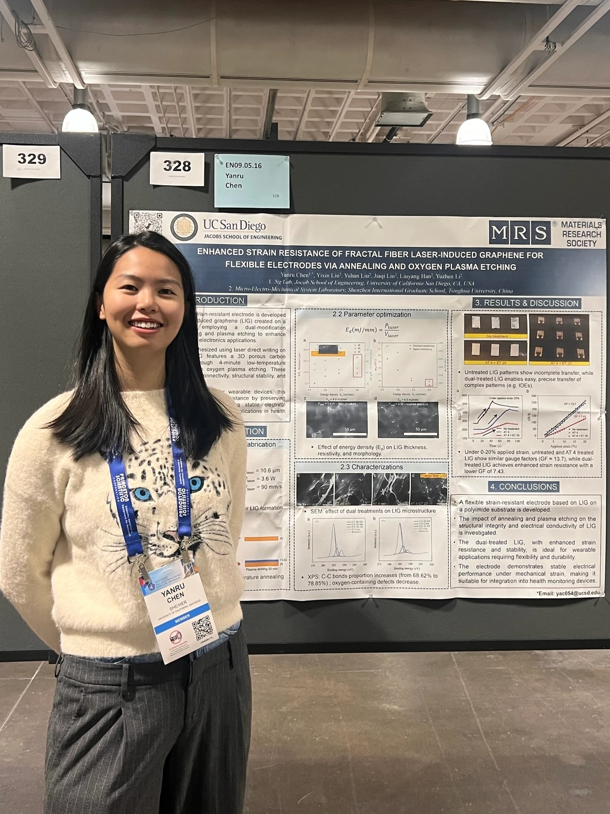

Memory-centric architecture
Processing-in-memory, near-memory computing, and in-storage processing for data-intensive workloads.
COMPUTER ARCHITECTURE · AI SYSTEMS
Building efficient systems for
intelligent workloads.
I’m a Ph.D. candidate in Electrical and Computer Engineering at UC San Diego, advised by Tajana Rosing in SEELab. My work brings together computer architecture, memory systems, and hardware–software co-design.
RESEARCH FOCUS
Designing efficient computing systems, with a foundation in devices and a focus on architecture.
Processing-in-memory, near-memory computing, and in-storage processing for data-intensive workloads.
LLM inference, graph dynamic programming, hyperdimensional computing, and database acceleration.
Heterogeneous system performance modeling and hardware–software co-design across compute and memory.
SELECTED RESEARCH

Chiplet-based heterogeneous near-memory acceleration for edge multimodal LLM inference.
Read paper
Processing-in-memory acceleration of recursive all-pairs shortest paths and graph dynamic programming.
Read paper
In-storage SQL database search using hyperdimensional computing on ferroelectric NAND flash.
Read paper
A heterogeneous PIM accelerator for general computational patterns in graph-based dynamic programming.
Read paperEXPERIENCE
UC SAN DIEGO · SEELAB
Research in hardware–software co-design, processing-in-memory, in-storage processing, graph analytics, hyperdimensional computing, and databases with Prof. Tajana Rosing.
SK HYNIX
Worked on heterogeneous AI architecture, memory systems, and system performance modeling.
UC SAN DIEGO · FLEXIBLE AND PRINTED ELECTRONICS LAB
Worked on memristor fabrication and a multimodal sensing glove, with a focus on MEMS/NEMS fabrication and biomedical signal processing.
TSINGHUA UNIVERSITY · MEMS LABORATORY
Developed wearable acetone gas sensors for breath analysis and laser-induced graphene flexible strain sensors, combining semiconductor devices, materials, and microfabrication.

Algorithm Intern · Department of Algorithm. Developed OCT imaging methods integrating near-infrared spectroscopy with machine learning for lipid imaging.
Through MITACS at University of Western Ontario, I contributed to a neuroscience project using texture analysis to extract microvascular signals from mouse heart videos and reconstructed 3D images—enabling cardiac blood flow heterogeneity diagnosis.
Presented two papers at EMBC 2020: “Quantifying Microvascular Alterations Due to a Pharmacological Agent” and “Fractal Dimension-Based Texture Analysis of CT Perfusion Imaging.”
Visited School of Mathematical Sciences and School of Electrical & Electronic Engineering at NUS and NTU. Attended lectures on advanced semiconductor materials and had discussions with professors. Experienced Singapore culture.
Attended workshops on micromaterials and devices at HKU, HKUST, and CityU. Learned from Prof. Li-Hsing Chen on brain-machine interfaces, visited 5G research labs, and saw MIT Robotics Atlas demonstration. This experience broadened my interdisciplinary research perspective.
PUBLICATIONS
Showing all 15 publications and manuscripts. * Equal contribution.
Runyang Tian, Yanru Chen, Weihong Xu, and Tajana Rosing
Quanling Zhao*, Yanru Chen*, Runyang Tian, Sumukh Pinge, Weihong Xu, Augusto Vega, Steven Holmes, Saransh Gupta, and Tajana Rosing
Yanru Chen*, Zheyu Li*, Keming Fan, Runyang Tian, John Hsu, Weihong Xu, Minxuan Zhou, and Tajana Rosing
Yanru Chen*, Runyang Tian*, Yue Pan, Zheyu Li, Weihong Xu, and Tajana Rosing
Yanru Chen, Runyang Tian, Zheyu Li, Mahbod Afarin, Weihong Xu, and Tajana Rosing
Yanru Chen, Jiaqi Liu, Yixin Liu, and Min Zhang
Yanru Chen
Jiaqi Liu, Yuan Yu, Rujun Zhang, Yanru Chen, Yanlong Guo, Yi Zhang, Ran Tao, Jing-Ting Luo, Hairong Zheng, Pingfa Feng, and Min Zhang
Yuhan Liu, Liuyang Han, Siqi Lv, Tao Jiang, Mingkai Duan, Hanyu Guo, Yuzhen Li, Qisen Xie, Yanru Chen, Dongkai Wang, and Min Zhang
Qisen Xie, Liuyang Han, Jie Liu, Wenjie Zhang, Liuyan Zhao, Yuhan Liu, Yanru Chen, Yuzhen Li, Qian Zhou, Ying Dong, and Min Zhang
Yanru Chen, Yixin Liu, Jiaqi Liu, Yuzhen Li, Yuhan Liu, Wenjie Zhang, Liuyang Han, Dongkai Wang, Shuhong Cao, Hanxiao Liu, and Min Zhang
Yixin Liu*, Yanru Chen*, Zhibiao Wang, and Min Zhang
Yuzhen Li, Yunfei Wang, Yixin Liu, Yuhan Liu, Liuyang Han, Yanru Chen, Juntian Qu, Puxiang Lai, and Xiang Qian
Yanru Chen, Sanjay R. Kharche, Yan Min Zhang, G. H. Janssen, and Christopher W. McIntyre
Sanjay R. Kharche, Yanru Chen, and Christopher W. McIntyre
EDUCATION
Ph.D. in Electrical and Computer Engineering
Advisor: Tajana Rosing · Advanced to candidacy, March 2026M.S. in Electronic Information · Intelligent Manufacturing
GPA: 3.78 / 4.0B.E. in Electronic Science and Technology · College Honors
GPA: 3.53 / 4.0 · Rank: 6 / 108B.A. in International Economy and Trade · 2018 — 2020
LATEST UPDATES
PRESENTATIONS
Oral presentations and posters across computing, sensing, and biomedical research.




LET’S CONNECT
I’m exploring full-time opportunities in computer architecture, performance modeling, and AI systems for 2027.
yac054@ucsd.edu